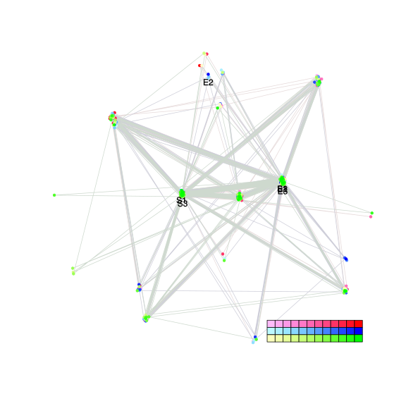
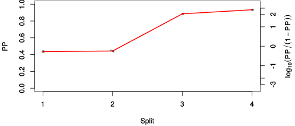
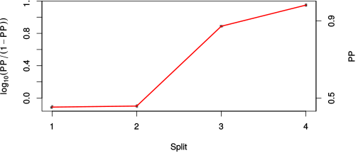

| chain # | burnin | subsample | Iterations (remaining) | command line | subdirectory | directory |
|---|---|---|---|---|---|---|
| 1 | 10000 | 1 | 90000 | /home/willemsen/software/bali-phy-3.0-beta2/bin/bali-phy E6_AA_red3_v2_Alpha.fas -s 456113 -n Alpha_c1 | Alpha_c1-1 | /DATA/work/ONCOGENEVOL/database/trees/Bali-Phy/E6 |
| 2 | 10000 | 1 | 90000 | /home/willemsen/software/bali-phy-3.0-beta2/bin/bali-phy E6_AA_red3_v2_Alpha.fas -s 49378 -n Alpha_c2 | Alpha_c2-1 | /DATA/work/ONCOGENEVOL/database/trees/Bali-Phy/E6 |
| 3 | 10000 | 1 | 90000 | /home/willemsen/software/bali-phy-3.0-beta2/bin/bali-phy E6_AA_red3_v2_Alpha.fas -s 46531 -n Alpha_c3 | Alpha_c3-1 | /DATA/work/ONCOGENEVOL/database/trees/Bali-Phy/E6 |
| P(data|M) = -2095.170 +- 0.188 | Complete sample: 61 topologies | 95% Bayesian credible interval: 11 topologies |
Phylogeny Distribution

| Partition support: Summary |
| Partition support graph: SVG |
{kind=link}
| 50% consensus | Newick (+PP) | SVG | |||||
| 66% consensus | Newick (+PP) | SVG | |||||
| 80% consensus | Newick (+PP) | SVG | |||||
| 90% consensus | Newick (+PP) | SVG | |||||
| 95% consensus | Newick (+PP) | SVG | |||||
| 99% consensus | Newick (+PP) | SVG | |||||
| 100% consensus | Newick (+PP) | SVG | |||||
| MAP | Newick (+PP) | SVG | |||||
| greedy | Newick (+PP) | SVG |
{kind=link}
{kind=link}
{kind=link}
{kind=link}
{kind=link}
{kind=link}
{kind=link}
{kind=link}
Alignment Distribution
Partition 1
| Diff | Min. %identity | # Sites | Constant | Informative | ||||
|---|---|---|---|---|---|---|---|---|
| Initial | FASTA | HTML | Diff | 1.81% | 166 | 1 (0.602%) | 42 (25.3%) | |
| Best (WPD) | FASTA | HTML | AU | 29.6% | 175 | 21 (12%) | 59 (33.7%) |
Mixing
{kind=link}
{kind=link}
| burnin (scalar) | ESS (scalar) | ESS (partition) | ASDSF | MSDSF | PSRF-CI80% | PSRF-RCF |
|---|---|---|---|---|---|---|
| 548 | 2272 | 8207.995 | 0.003 | 0.006 | 1.001 | 1.009 |
Projection of RF distances for the first 3 chains3D | Variation of split PPs across chains |
Scalar variables
| Statistic | Median | 95% BCI | ACT | ESS | burnin | PSRF-CI80% | PSRF-RCF |
|---|---|---|---|---|---|---|---|
| prior | -108.3 | (-129.9, -90.64) | 49.96 | 5404 | 498 | 1 | 0.9981 |
| prior_A1 | -86.61 | (-106.6, -74.56) | 14.88 | 18147 | 191 | 0.9998 | 1 |
| likelihood | -2084 | (-2097, -2072) | 30.14 | 8957 | 309 | 1 | 1.002 |
| logp | -2193 | (-2213, -2176) | 51.26 | 5266 | 548 | 0.9999 | 0.995 |
| Heat.beta | 1 | ||||||
| Scale1 | 3.226 | (1.328, 6.224) | 1.008 | 267974 | 98 | 1 | 1.001 |
| S1.F.pi.A | 0.05418 | (0.03641, 0.07416) | 8.011 | 33702 | 526 | 1 | 0.9923 |
| S1.F.pi.R | 0.0791 | (0.0579, 0.102) | 9.449 | 28574 | 485 | 0.9998 | 1 |
| S1.F.pi.N | 0.02679 | (0.0155, 0.04015) | 7.915 | 34114 | 391 | 1 | 1.005 |
| S1.F.pi.D | 0.04821 | (0.03164, 0.06657) | 7.89 | 34220 | 233 | 1 | 0.9971 |
| S1.F.pi.C | 0.05405 | (0.03388, 0.07716) | 7.936 | 34021 | 486 | 1 | 1.005 |
| S1.F.pi.Q | 0.03914 | (0.0264, 0.05365) | 7.793 | 34647 | 391 | 0.9999 | 0.9979 |
| S1.F.pi.E | 0.05884 | (0.04051, 0.07895) | 8.145 | 33151 | 537 | 1 | 1.001 |
| S1.F.pi.G | 0.07015 | (0.04701, 0.09574) | 8.445 | 31972 | 499 | 0.9998 | 1.001 |
| S1.F.pi.H | 0.03797 | (0.02368, 0.05411) | 8.103 | 33322 | 341 | 0.9997 | 0.9987 |
| S1.F.pi.I | 0.04822 | (0.03175, 0.06632) | 8.258 | 32695 | 264 | 1 | 0.9989 |
| S1.F.pi.L | 0.1124 | (0.08551, 0.1407) | 7.558 | 35725 | 161 | 1 | 0.9993 |
| S1.F.pi.K | 0.04198 | (0.02717, 0.05799) | 8.257 | 32698 | 256 | 0.9997 | 0.9986 |
| S1.F.pi.M | 0.009215 | (0.003192, 0.01689) | 8.367 | 32268 | 425 | 1.001 | 1.001 |
| S1.F.pi.F | 0.0394 | (0.02407, 0.05715) | 7.974 | 33859 | 372 | 1 | 1 |
| S1.F.pi.P | 0.03758 | (0.02198, 0.05595) | 7.915 | 34114 | 483 | 0.9998 | 1.002 |
| S1.F.pi.S | 0.05242 | (0.03652, 0.06987) | 8.051 | 33535 | 329 | 1.001 | 0.9955 |
| S1.F.pi.T | 0.0564 | (0.03897, 0.07508) | 7.939 | 34009 | 326 | 1 | 0.9964 |
| S1.F.pi.W | 0.02909 | (0.01502, 0.04478) | 8.331 | 32410 | 210 | 0.9996 | 0.9995 |
| S1.F.pi.Y | 0.04586 | (0.02932, 0.06412) | 7.89 | 34221 | 181 | 1 | 0.9989 |
| S1.F.pi.V | 0.04892 | (0.03326, 0.06632) | 8.101 | 33328 | 538 | 1 | 1.001 |
| I1.RS07.meanIndelLengthMinus1 | 5.922 | (2.069, 12.41) | 4.163 | 64852 | 248 | 0.9997 | 1 |
| I1.RS07.logLambda | -4.692 | (-5.402, -4.024) | 1.823 | 148083 | 110 | 0.9998 | 0.9986 |
| |A1| | 177 | (172, 191) | 118.8 | 2272 | 320 | 0.9184 | 1.009 |
| #indels1 | 9 | (8, 12) | 9.204 | 29334 | 64 | 0.6667 | 0.999 |
| |indels1| | 59 | (43, 80) | 8.72 | 30963 | 281 | 0.9615 | 0.9974 |
| #substs1 | 366 | (355, 372) | 73.01 | 3698 | 328 | 0.9167 | 1.003 |
| Scale1*|T| | 3.899 | (3.442, 4.385) | 2.108 | 128069 | 97 | 1 | 0.9998 |
| |A| | 177 | (172, 191) | 118.8 | 2272 | 320 | 0.9184 | 1.009 |
| #indels | 9 | (8, 12) | 9.204 | 29334 | 64 | 0.6667 | 0.999 |
| |indels| | 59 | (43, 80) | 8.72 | 30963 | 281 | 0.9615 | 0.9974 |
| #substs | 366 | (355, 372) | 73.01 | 3698 | 328 | 0.9167 | 1.003 |
| |T| | 1.209 | (0.4779, 2.22) | 1.002 | 269419 | 184 | 1 | 1.001 |